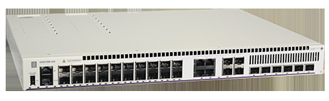

bp-os6570m-datasheet

R（触发场景）
- 运营商/城域光纤汇聚、CPE（客户驻地设备）部署选型
- 全光口接入（20x100/1000 SFP）与 10G/25G 许可升速规划
- 站点无 AC 市电：
选 -12D/U28D 直流版 + DC 备份电源 - 投标应答前核实 "hardware capable, requires future SW development" 的能力清单
I（核心理念）
- OS6570M 是"企业与运营商网络的边缘汇聚方案"（原文p64 ：
"industry-leading edge and aggregation solution for both enterprise and service provider networks"），Metro Ethernet 服务特性内置、AC/DC 双电源、10G/25G 许可升速。 - 层级：
城域/SP 边缘（企业接入层最高档之一），上接 6860 系。
A1（与相邻系列选型差异）
- vs OS6465T：
同为城域三重播放定位，6465T 是楼内宽温小盒（-10~60°C、af/at）；6570M 面向 SP 部署（Metro 特性 + SPB 许可 + 25G 路径 + 1588v2 透明时钟 + 双电源）。 - vs OS6560：
6560 校园多千兆（RJ45 为主 + MACsec 已交付）；6570M 全光口为主、加密/时钟部分待软件。 - vs OS6860E：
6860N 已有 25G SFP28 + fabric；6570M 走许可路线升 25G，价格更低。
A2（规格细节速查表）
机型矩阵（原文p66 表 1）： | 型号 | RJ45 | 100M/1G SFP | SFP28（1G/10G/25G） | 上联/VFL | 电源 | |---|---|---|---|---|---| | OS6570M-12 | 8 | 2 | 0 | 2x SFP+ 1G/10G | 内置 AC + 外置 AC/DC 备份 | | OS6570M-12D | 8 | 2 | 0 | 2 | 内置 DC | | OS6570M-U28 | 0 | 20 | 4（默认 1G） | 2x SFP+ | 模块 AC + 模块备份 | | OS6570M-U28D | 0 | 20 | 4* | 2 | 模块 DC |
- （U28 另有 4x SFP/RJ45 1G combo；*："Default speed is 1G. License upgradable to 10G or 25G."，原文p66 注。
- ）上联与堆叠：
VFL 默认 40 Gb/s，SW-PRM28 许可后 100 Gb/s（原文p67 ）；VC 最多 4 台（原文p69 ，12 型）/LED 显示支持到 8（原文p70 ）；U28 最多 6x25G 上联（原文p65 ）。 - 交换容量与包转发（原文p66 ）：
12 型 60 Gb/s / 44.6 Mpps；U28 型 348 Gb/s / 258.9 Mpps（ASIC 396 Gb/s）。 - 电源体系：
12 型内置固定电源 + 外置备份（OS6570-12-BP 60W AC / -12-BP-D 30W DC）；U28 型双模块（OS6570-BP/BP-D 150W，原文p67 ）；全系 1+1 热插拔（备份）。 - Layer 特性：
静态 + RIP + Access OSPFv2/v3 默认；完整 OSPFv2/v3、IS-IS、PIM、VRF 需 OS6570M-SW-AR（原文p65 /原文p70 ）；SPB-M 支持需 PRM 许可（SW-PRM12/U28 用 SW-PRM28，且 810R4 起生效，原文p68 ）；Metro 特性内置（Q-in-Q/G.8032/SAA/TR-101/MEF CE 3.0，原文p70 ）；256 IPv4 + 128 IPv6 静态/RIP 路由；32k MAC；1588v2 透明时钟（U28，**待软件）。 - 许可家族（原文p65 /原文p68 ）：
SW-PERF4（4 口 SFP+ 升 10G）、SW-PRM28（6xSFP28 升 25G + SPB + AR）、SW-PRM12（12 型 SPB + AR）、SW-AR（高级路由）。 - 硬件平台：
双核 ARM Cortex A55 1.5GHz、2GB RAM、4GB flash、24MB 包缓冲（原文p66 ）。 - 功耗/环境：
待机 15/61W；0~50°C；MTBF 最高 3.26M 小时（12 型单电源，原文p67 ）。 - 规格红线：
25G/MACsec/1588v2/Secure Boot 带 ** 号（待软件开发，原文p65 注）；无 PoE。
E（适用场景）
- 运营商托管服务：
CPE、光纤汇聚（原文p64 部署建议）——U28 全光 20x SFP - 无 AC 站点（户外机柜/传输机房）：
12D/U28D 直流版（C7） - 分期建设：
先 1G 全光跑，SW-PERF4→SW-PRM28 逐步升 10G/25G（C9） - 需 SPB/IS-IS/BGP 的 SP 边缘：
SW-PRM12/PRM28（内含 SW-AR）一步到位
B（限制与坑）
- 25G、256bit MACsec、1588v2、Secure Boot 全部标 "**Hardware capable, requires future SW development"（原文p65 注）——投标应答需核实当前 AOS 版本，不能当已交付能力写（X8）
- 25G 上联 "*License purchase required"（原文p65 ）——许可行项勿漏（X15）
- 默认只有 basic L3：
BGP/IS-IS/完整 OSPF 都要 SW-AR 或 PRM 许可（X17，原文p65 ） - SFP28 口默认速度 1G，到货即插 10G/25G 不通（原文p66 注）
- U28 无 PoE——AP/摄像头供电另配
- 备份电源 12 型是外置小电源（60/30W），与 U28 模块 150W 不同，报价别混
来源：bp-omniswitch-datasheets DOC 8（p64-72，DID22100601EN February 2026）；verified.md C7/C9/X8/X15/X17/P9/P10/F1/F5
仅供内部学习使用 · 教材版权归 ALE Training Services 所有